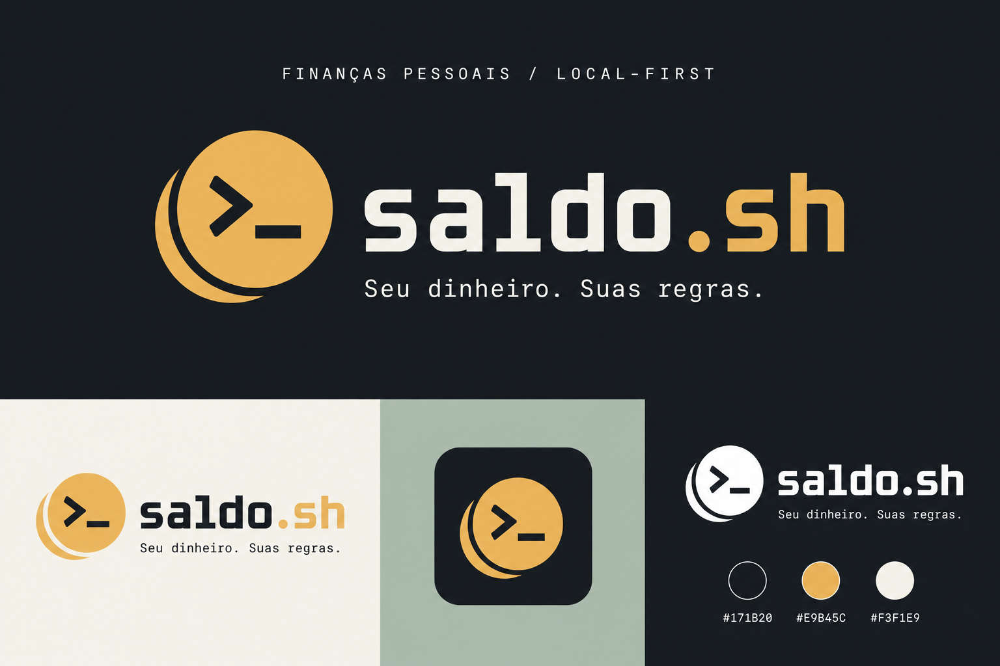

Finanças pessoais / local-first
Seu dinheiro.
Suas regras.
Contas, cartões, faturas e planejamento em um só lugar — funcionando no seu dispositivo, sem depender de um servidor para existir.
- ✓ Funciona offline
- ✓ Sem conta obrigatória
- ✓ Android + Windows
SETEMBRO / 2026Olá, João
● sincronizado
Evolução do caixa6 meses
01Local-firstSeus dados começam no seu dispositivo.
02BYOKVocê escolhe a IA e usa sua própria chave.
03Sync opcionalGoogle Drive criptografado, quando você quiser.
Controle completo
O essencial, sem transformar sua vida financeira em produto.
Uma visão clara do presente, dos próximos meses e das decisões que você precisa tomar.
01 / ORGANIZAÇÃO
Contas, cartões e faturas no mesmo fluxo.
Registre saldos, limites, compras parceladas e pagamentos parciais de fatura indicando de qual conta saiu o dinheiro.
▥Conta principalSaldo atualR$ 8.902,70
▭NubankFatura atualR$ 1.836,40
R$ 650 pagos de R$ 1.836,40
Planejamento que atravessa os meses.
Veja parcelas, recorrências e a evolução projetada do caixa sem limitar a previsão a poucos meses.
Offline por padrão.
SQLite local, segredos no armazenamento seguro do sistema e nenhuma API própria no caminho.
$ dados --onde
→ neste dispositivo
→ neste dispositivo
04 / ASSISTENTE
Converse com suas finanças, não com dados genéricos.
O assistente consulta informações locais por ferramentas controladas, prepara lançamentos para sua revisão e cria gráficos dentro do app.
Quanto posso gastar se eu guardar R$ 500 por mês?
✓
Consultando resumo mensalDados locais atualizados
Mantendo sua meta, você tem uma margem estimada de R$ 1.284,60 neste mês.
Um app, duas telas
Feito para Android.
Confortável no Windows.
Use no celular ao longo do dia e abra no computador quando quiser analisar com mais espaço. O Google Drive mantém os dispositivos alinhados sem virar o dono dos seus dados.
AndroidWindowsLayout responsivo
WINDOWS
Relatórios
Entradas × saídas
ANDROID
Nova transação
Arquitetura local-first
Seu financeiro continua sendo seu.
- ✓Sem backend obrigatório
O aplicativo continua útil sem internet, IA ou conta Google.
- ✓Segredos fora do banco
API keys e credenciais ficam no armazenamento seguro do sistema.
- ✓Sincronização criptografada
O snapshot do Drive é protegido antes de sair do dispositivo.
Identidade saldo.sh
Finanças para quem gosta de entender a própria ferramenta.
Visual inspirado em terminal, sinal monetário e software configurável — sem cara de banco e sem promessas mágicas.

Pronto para configurar?